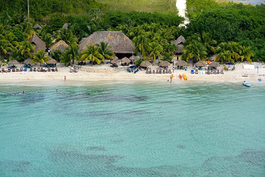

Tour these amazing places in our vehicles.
Palancar Beach and Reef.
Join the Cozumel Snorkeling Tour of Palancar. This is a fun, half-day guided adventure snorkeling among some colorful coral. The island itself is a popular destination for snorkelers and scuba divers with plenty of places to choose from for your next adventure.
Laguna Chankanaab.
This is one of the most insteresting attractions in Cozumel. Located just over 4 miles from San Miguel de Cozumel, it is a popular spot for outings by its crystal-clear waters and tropical fish.
San Gervasio.
This is the most important of the more than 30 mayan sites discovered around Cozumel. Built in 800 AD and located 10 miles from San Miguel de Cozumel. For centuries, this has been the focal point of the island's religious life and a place of pilgrimage from across the Mayan empire.
Discover Mexico Park.
Popular among cruise ship passengers, Discover Mexico Park Cozumel is one of the newest attractions on the island. This amazing park showcases traditional art, music, food, and traditional dances.
Stingray Beach.
Join in the fun going on a guided swin with stingrays in the facility's enclosed bays where you will learn many fascinating facts about this animals, including a chance to feed and touch them.
Dolphins.
If you are looking for a chance to see this amazing mammals up close or swim with them, Cozumel has many options for you! Dolphinaris Cozumel or Dolphin Discovery Cozumel are two of the top choices.